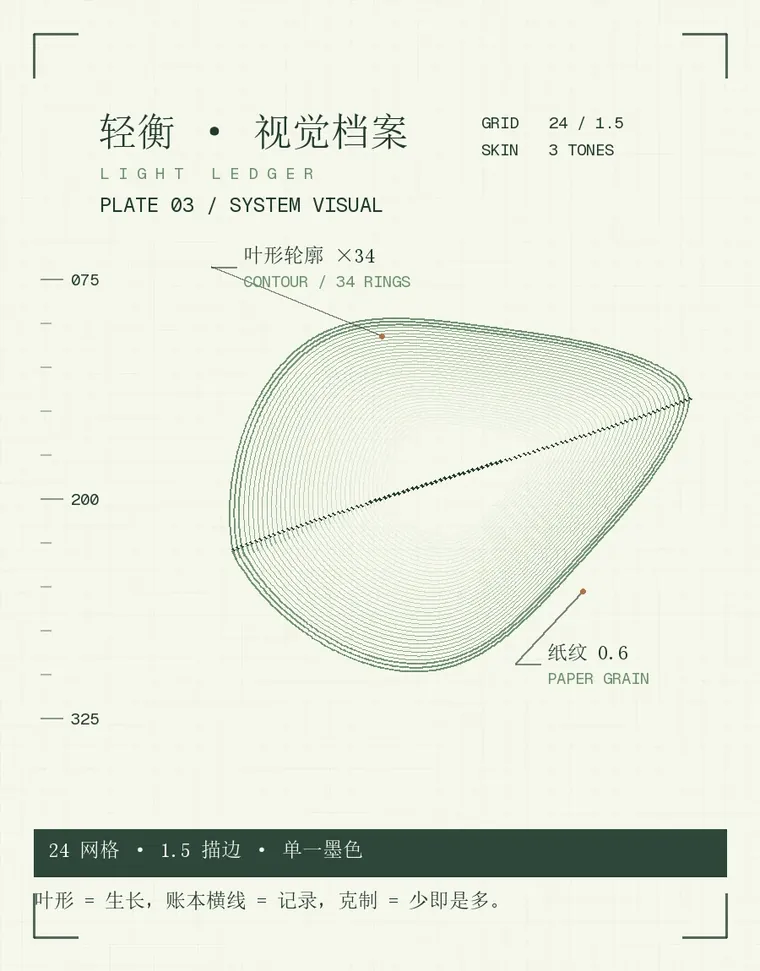

今日能量
—已记录 kcal
每日目标 — kcal
记录一餐，让今天更清晰。
每日目标 — kcal
记录一餐，让今天更清晰。
正在计算…
每天 30 秒，三样就够。
结合今天的训练记录与你的目标，直接问练什么、强度怎么定。
BMI 与体脂仅供一般参考，不是诊断。
仅预览，不发送；点「获取建议」并同意后才发送。
展开后载入。
还没有足够的训练记录来自动生成；先记两周训练。
动作 · 组 · 次 · 负重。
复制到当前日期，再按实际份量微调。
会标记为「复制」。
逐项核对克重与营养；确认后才保存。
拍摄时间 ≠ 进餐日期与时间，可在上方改。
数据来源与许可见「我的 → 关于轻衡 → 参考与致谢」。
选中后可把食品名填入上方描述；请补充实际克重。图片仍需视觉模型识别名称与份量。
展开后载入。
发送仍要点「提问」。
需要先在「我的」保存 API Key；外发授权在「我的 → 数据、外观与说明」里统一管理。带照片提问还需要已启用视觉模型。答案仅供参考，不替代医疗诊断。
记录只保存在你的手机上，导出的备份文件会包含它们。
连线只连接实测点。
| 日期 | 体重 kg | 腰围 cm | 体脂 % | 肌肉 kg | BMI |
|---|
按档案身高计算，仅供参考。
会再走一遍首次使用的向导，用来重新测目标；已有记录不会删除。
记录只存在本机；API Key 由原生层保存、不回传。DeepSeek 与 B.AI 均使用你付费的 API，不能保证免费。不要在餐食描述里填写身份信息或凭据。
deepseek-flash 支持文字与图片；deepseek-v4-pro 仅文字。B.AI 的模型名需按你的账户可用列表填写。
每次调用后记录 token 用量（不记录问题与回答）；金额按上面的单价估算，余额以服务商为准。
正在读取今天的建议…
这里只显示今天的建议；未开启推送或当天还没生成时为空。
到点用本地通知提醒并给出当天分析。若开启「自动分析」且已配 API，会在后台生成建议并写进通知（产生 API 费用）；否则只提醒，点开再分析。
需要允许通知权限，否则到点不会有提醒。精确时间在部分手机上还需要「闹钟与提醒」权限。
按当前时间自动选中餐次。
早于午餐起记早餐，午餐起之后记午餐，晚餐起之后记晚餐，加餐起之后记加餐。
导出 JSON 备份，或导入已有记录。备份可能包含健康信息，请妥善保管。
APK 可离线记录、查看与使用本地规则建议和明确克重的估算；只有你同意的外部 AI 调用需要网络。浏览器演示只把记录存在本机、不保存密钥。导入按日期或记录 ID 合并，请先备份。
通知与精确闹钟影响提醒能否准时；健康数据未授权时，其余功能不受影响。
JSON 是唯一权威数据；卸载应用会一起删除，建议每 7 天或新增 20 条记录后导出一次。
写一句就能长期生效，例如「不吃香菜」「早餐固定两个鸡蛋加豆浆」「晚上 8 点后不进食」。估算、建议与训练问答都会带上这些偏好。
偏好只存在本机；调用外部模型时会随请求一起发送，用来避免给出与习惯冲突的建议。最多 20 条。

正在读取存储状态…
轻衡是个人健康记录工具：记录、趋势、本地估算与本地建议都可离线。只有你勾选同意并点击时，才把当次所需数字发给你配置的模型服务商。不提供诊断或处方，结论以你的记录与专业意见为准。
每条记录都由当时的提示词与口径算出；升级后旧记录不会被重新解释，这里的版本号用于区分。
正在读取存储状态…
记录以 JSON（state.json）为唯一权威来源，SQLite 只是同步镜像（用于一致性校验与迁移）。不一致时以 JSON 为准，点「立即镜像」重建。
训练与营养的判断规则标注了来源等级，主要依据：Canadian 24-Hour Movement Guidelines (2022)、ISSN Position Stand: Protein and Exercise (2017)、Helms et al. 关于能量平衡与减脂速率 (2014)、AASM 睡眠时长共识 (2015)、中国居民膳食指南 (2023)。App 内每条建议旁的「依据」即指向这些来源，等级 A~C 表示证据强度。
动作要点、训练编排与解剖提示，参考了以下创作者公开内容，仅作为理解参考，不代表其本人观点或背书：
界面图标取自 Lucide（MIT 许可，lucide-icons），统一 24 网格与 1.7–1.8 描边、颜色跟随语义色；早前版本用过 Tabler Icons。
食材营养值来自 USDA FoodData Central（公有领域）；在线查询使用 Open Food Facts（ODbL 许可，需署名），按每 100g 计、以标签为准，服务限约 10 次/分钟，只在点按钮时查询。家常菜为示例估算。
感谢上述创作者与公开数据集的作者。轻衡与上述个人和机构无隶属、合作或代言关系；本应用不提供诊断与处方，所有建议只作为你记录的参考，具体方案请咨询专业人士。
四步完成设置，之后就能记录饮食与身体数据。所有数据只保存在这台手机上。
性别、身高、体重与年龄只用于计算基础代谢和目标，不会上传。
五个目标的缺口、蛋白带与节奏都不一样；选一个再测算。
训练天数取自「记录 → 训练计划」；保存计划会按新的每周天数重算目标。
不填也能用：记录、趋势、本地估算与本地建议都不需要网络。填入你自己的 API Key 后，才能用图片识别、AI 问答与后台推送分析。Key 只保存在手机本机（Android Keystore 加密），不会回传。
这三项都是可选的，但开了体验才完整：提醒才能准时到，手表数据才能读进来。
状态会在你回到应用时自动刷新。
—
负重一律记总重量：杠铃 = 杆重 + 两侧片重（15 kg/侧 + 20 kg 杆 = 50 kg）；哑铃按单只记；器械按配重片标示。两侧对称时总重 = 杆重 + 2 × 每侧片重；单侧递进（只加一边）按实际总重填。
添加照片
语音输入
正在聆听…
录音只在本机转成文字，不会保存或上传音频；识别结果会追加到输入框，可再修改。
通用动作要点，不替代教练指导；有疼痛就停下。